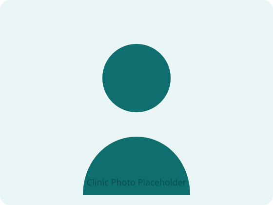
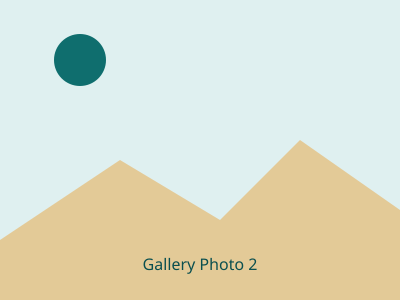
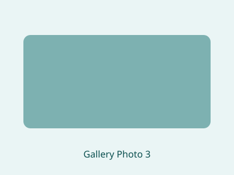

కన్సల్టెంట్ జనరల్ & లాపరోస్కోపిక్ సర్జన్
MBBS, MS (జనరల్ సర్జరీ) — తిరుపతి, ఆంధ్రప్రదేశ్లో 20+ సంవత్సరాల అనుభవంతో రోగులకు సేవలు అందిస్తున్నారు. అధునాతన లాపరోస్కోపిక్ (కీహోల్) సర్జరీ, థైరాయిడ్, హెర్నియా మరియు జీర్ణాశయ సంబంధిత చికిత్సలలో నమ్మకమైన వైద్యుడు.
📍 మదర్ హాస్పిటల్ & హీలియోస్ హాస్పిటల్స్, తిరుపతిలో సేవలు అందిస్తున్నారు
సంవత్సరాల అనుభవం
నిర్వహించిన శస్త్రచికిత్సలు
అనుబంధ ఆసుపత్రులు
శిక్షణ పొందిన యువ సర్జన్లు

డాక్టర్ గురించి
డా. వంశీధర్ కొనాటి తిరుపతి, ఆంధ్రప్రదేశ్కు చెందిన ప్రముఖ కన్సల్టెంట్ జనరల్ మరియు లాపరోస్కోపిక్ సర్జన్. తిరుపతిలోని S.V. మెడికల్ కాలేజీ మరియు S.V.I.M.S. యూనివర్సిటీ పూర్వ విద్యార్థి అయిన ఆయన, 20 సంవత్సరాలకు పైగా అంకితభావంతో కూడిన క్లినికల్ అనుభవంతో, తన కెరీర్లో 10,000కు పైగా శస్త్రచికిత్సలను విజయవంతంగా నిర్వహించారు, ఈ ప్రాంతంలోని వేలాది మంది రోగులు మరియు కుటుంబాల నమ్మకాన్ణి పొందారు.
ఆయన ప్రస్తుతం తిరుపతిలోని అత్యంత ప్రతిష్టాత్మకమైన రెండు ఆసుపత్రులలో కన్సల్టెంట్ సర్జన్గా పనిచేస్తున్నారు — మదర్ హాస్పిటల్ మరియు హీలియోస్ మల్టీ సూపర్ స్పెషాలిటీ హాస్పిటల్ — ఇంటికి దగ్గరలోనే అధునాతన, కనిష్ట కోత శస్త్రచికిత్స సంరక్షణను అందిస్తున్నారు.
తన సొంత శస్త్రచికిత్స ప్రాక్టీస్తో పాటు, డా. కొనాటి మార్గదర్శకత్వం పట్ల మక్కువ కలిగి ఉన్నారు. ఆయన లాపరోస్కోపిక్ శస్త్రచికిత్స పద్ధతులలో అనేక మంది యువ వైద్యులకు శిక్షణ ఇచ్చారు, ఈ రంగంలో నైపుణ్యం కలిగిన తదుపరి తరం సర్జన్లను తయారు చేయడంలో సహాయపడ్డారు.

🩺 రోగులు ఆయనను ఎందుకు ఎంచుకుంటారు
తిరుపతిలో రెండు దశాబ్దాల కేంద్రీకృత సర్జికల్ ప్రాక్టీస్.
తక్కువ నొప్పి & వేగవంతమైన రికవరీ కోసం ఆధునిక కీహోల్ పద్ధతులు.
ప్రతి దశలోనూ స్పష్టమైన వివరణలు మరియు కరుణతో కూడిన చికిత్స.
10,000+ శస్త్రచికిత్సలు అద్భుతమైన ఫలితాలతో నిర్వహించారు.
🎓 విద్య & అర్హతలు
సాధారణ మరియు లాపరోస్కోపిక్ శస్త్రచికిత్స విధానాలలో ప్రత్యేక శిక్షణ, అధునాతన కనిష్ట-ఇన్వేసివ్ పద్ధతులకు పునాది వేసింది.
జనరల్ సర్జరీలో ప్రత్యేకత సాధించడానికి ముందు ప్రాథమిక వైద్య విద్యను పూర్తి చేశారు.
సర్జికల్ గ్యాస్ట్రోఎంటరాలజీలో అధునాతన ప్రత్యేకత, లాపరోస్కోపిక్ GI, హెర్నియా మరియు సంబంధిత విధానాలలో నైపుణ్యాన్ని బలపరిచింది.
తిరుపతి మరియు పరిసర ప్రాంతాలలో వేలాది మంది రోగులకు సేవలందిస్తూ రెండు దశాబ్దాల నిరంతర శస్త్రచికిత్స ప్రాక్టీస్.
⚕️ నైపుణ్య రంగాలు
డాక్టర్ కొనాటి సాధారణ మరియు లాపరోస్కోపిక్ శస్త్రచికిత్స పరిస్థితుల విస్తృత శ్రేణిలో నిపుణత కలిగిన రోగ నిర్ధారణ మరియు చికిత్సను అందిస్తారు.
థైరాయిడ్ వాపులు, గాయిటర్, నాడ్యూల్స్ మరియు సంబంధిత రుగ్మతల నిర్ధారణ మరియు శస్త్రచికిత్స నిర్వహణ.
ఇంగ్యునల్, నాభి మరియు ఇన్సిజనల్ హెర్నియాల కోసం లాపరోస్కోపిక్ మరియు ఓపెన్ హెర్నియా రిపేర్, అలాగే సున్నతి మరియు ఇతర చిన్న శస్త్రచికిత్స విధానాలు.
తీవ్రమైన మరియు దీర్ఘకాలిక అపెండిసైటిస్ (అపెండిక్స్ ఆపరేషన్) కోసం సురక్షితమైన మరియు సకాలంలో లాపరోస్కోపిక్ అపెండెక్టమీ.
కనిష్ట-ఇన్వేసివ్ పద్ధతులతో పైల్స్ (మూలవ్యాధి), ఫిషర్లు మరియు ఫిస్టులా చికిత్స, లేసర్ పైల్స్ సర్జరీ మరియు వేగవంతమైన రికవరీ కోసం HAL-RAR పద్ధతి సహా.
వేరికోస్ వెయిన్స్ మరియు సంబంధిత సిరల రుగ్మతల సమగ్ర మూల్యాంకనం మరియు శస్త్రచికిత్స చికిత్స.
కడుపు, ప్రేగు మరియు గాల్బ్లాడర్ (గాల్స్టోన్) పరిస్థితుల శస్త్రచికిత్స నిర్వహణ — దీర్ఘకాలిక కడుపు నొప్పి పరీక్ష మరియు GERD (ఆమ్ల రిఫ్లక్స్) సర్జరీ సహా.
ఖచ్చితత్వం మరియు వేగవంతమైన రికవరీతో లాపరోస్కోపిక్ హిస్టెరెక్టమీ (గర్భాశయం తొలగింపు శస్త్రచికిత్స) విధానాలు.
స్తన సంబంధిత పరిస్థితుల నిర్ధారణ మరియు శస్త్రచికిత్స నిర్వహణ, మాస్టెక్టమీ సహా.
రోగి రికవరీ సమయాన్ని తగ్గించడానికి బహుళ విభాగాలలో అధునాతన కీహోల్ (కనిష్ట-ఇన్వేసివ్) సర్జరీ నైపుణ్యం.
🏥 ఆయనను ఎక్కడ కలవాలి
కన్సల్టెంట్ జనరల్ & లాపరోస్కోపిక్ సర్జన్
Sai Ram Street, Old Maternity Hospital Rd, Nehru Nagar, Tirupati, Andhra Pradesh 517501
కన్సల్టెంట్ జనరల్ & లాపరోస్కోపిక్ సర్జన్
1-11, Karakambadi Rd, Mangalam, Chennayyagunta, Tirupati, Andhra Pradesh 517509
🏆 గుర్తింపు
దిగువ ఉన్న ప్లేస్హోల్డర్ కార్డులు — నిర్ధారించిన తర్వాత నిజమైన అవార్డులు, సన్మానాలు, మీడియా ప్రస్తావనలు లేదా స్వచ్ఛంద శిబిరాలతో భర్తీ చేయండి.
[జారీ చేసిన సంస్థ మరియు సంవత్సరం జోడించండి]
[ప్రచురణ / ఛానెల్ మరియు సంవత్సరం జోడించండి]
[ఉచిత శిబిరాలు లేదా సామాజిక సేవ వివరాలు జోడించండి]
📸 గ్యాలరీ
దిగువ చూపిన ప్లేస్హోల్డర్ చిత్రాలు — assets/images/gallery-*.svg లో నిజమైన ఫోటోలతో భర్తీ చేయండి (లేదా .jpg ఫైళ్లకు మార్చండి).


📝 ఆరోగ్య చిట్కాలు & వ్యాసాలు
సాధారణ శస్త్రచికిత్స పరిస్థితులపై సరళమైన, సులభంగా అర్థమయ్యే ఆరోగ్య మార్గదర్శకత్వం.
సర్జన్ను కలవాల్సిన సమయం అని సూచించే ప్రారంభ లక్షణాలను తెలుసుకోండి.
మరింత చదవండి →కీహోల్ సర్జరీ తర్వాత ఏమి ఆశించాలి మరియు వేగంగా ఎలా కోలుకోవాలి.
మరింత చదవండి →మూలవ్యాధి లక్షణాలు మరియు చికిత్స ఎంపికలను అర్థం చేసుకోవడం.
మరింత చదవండి →❓ తరచుగా అడిగే ప్రశ్నలు
లాపరోస్కోపిక్ సర్జరీ అనేది సుస్థిరమైన, కనిష్ట-ఇన్వేసివ్ పద్ధతి, దీనిలో సాధారణంగా చిన్న కోతలు, తక్కువ నొప్పి మరియు ఓపెన్ సర్జరీతో పోలిస్తే వేగవంతమైన రికవరీ ఉంటుంది. మీ నిర్దిష్ట కేసుకు ఇది సరిపోతుందో లేదో డాక్టర్ కొనాటి నిర్ధారిస్తారు.
రికవరీ సమయం శస్త్రచికిత్స రకం మరియు మీ మొత్తం ఆరోగ్యంపై ఆధారపడి ఉంటుంది. అనేక లాపరోస్కోపిక్ విధానాలు సాంప్రదాయ ఓపెన్ సర్జరీ కంటే సాధారణ కార్యకలాపాలకు వేగంగా తిరిగి రావడానికి వీలు కల్పిస్తాయి — మీ ఖచ్చితమైన రికవరీ ప్రణాళిక సంప్రదింపుల సమయంలో చర్చించబడుతుంది.
అవును, సకాలంలో మూల్యాంకనం మరియు లాపరోస్కోపిక్ అపెండెక్టమీ అందుబాటులో ఉన్నాయి — అత్యవసర కేసుల కోసం నేరుగా క్లినిక్/ఆసుపత్రికి కాల్ చేయండి.
డాక్టర్ కొనాటి తెలుగు, ఇంగ్లీష్ మరియు హిందీలో సులభంగా మాట్లాడగలరు, మీరు ఎక్కడ సుఖంగా ఉంటారో ఆ భాషలో మీ సమస్యను చర్చించవచ్చు.
[ప్రతి ఆసుపత్రిలో అంగీకరించిన బీమా ప్రొవైడర్లు / TPA ఒప్పందాలను నిర్ధారించండి]
📞 సంప్రదించండి
అపాయింట్మెంట్లు లేదా ప్రశ్నల కోసం, దిగువ అందించిన వివరాల ద్వారా సంప్రదించండి.